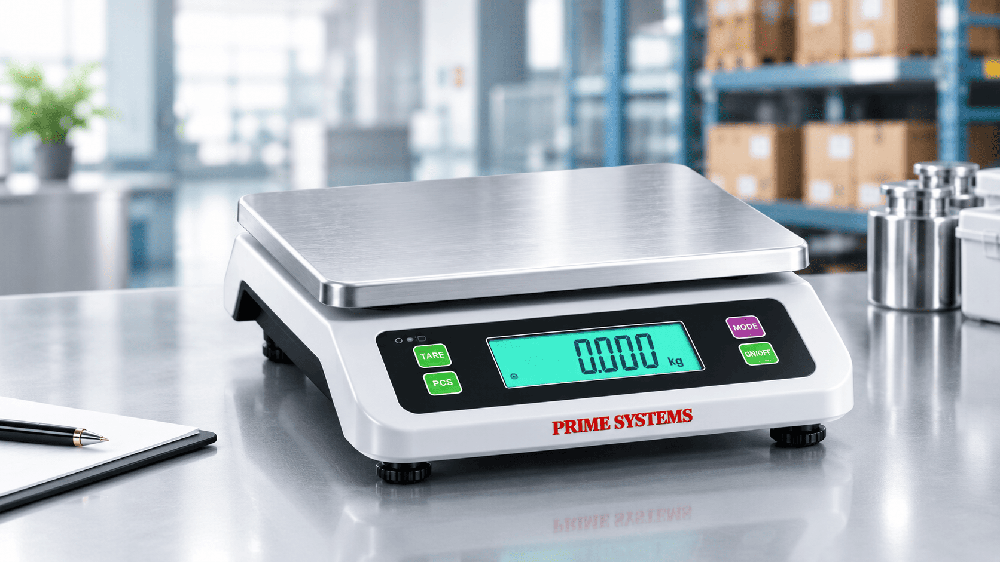
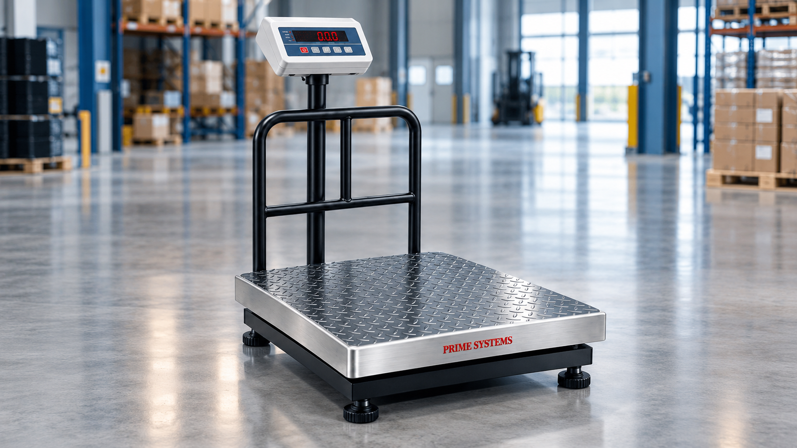

01 / COMMERCIAL
Weighing Scales
Explore weighing scales for shops, businesses and everyday weighing applications. Find equipment suited to your measurement and weighing needs.
Learn More
Explore weighing scales for shops, businesses and everyday weighing applications. Find equipment suited to your measurement and weighing needs.
Learn More
Discover platform weighing scales for weighing goods, packages and materials in industrial, warehouse and commercial environments.
Learn More
Explore laboratory balances for sample measurement, testing and quality-control applications. Choose equipment according to your precision requirements.
Learn MoreExplore reliable weighing equipment from Prime Systems, Umbergaon, Gujarat, for industrial, commercial and laboratory applications.

01 / WEIGHINGExplore practical weighing scales for everyday commercial and business requirements. Find a suitable solution for routine weighing, stock handling and day-to-day operations.

02 / INDUSTRIALSuitable for weighing goods, materials and packages in industrial and warehouse environments. Explore platform weighing solutions for your operational needs.
Discover laboratory weighing balances for measurement tasks in testing, research and quality-control environments. Choose equipment according to your application and precision requirements.
 04 / VEHICLE WEIGHING
04 / VEHICLE WEIGHING
Explore truck weighbridge solutions for weighing loaded and unloaded commercial vehicles. Designed for vehicle-weighing workflows at industrial, logistics and material-handling facilities.
Prime Systems provides weighing equipment for commercial, industrial and laboratory applications. Based in Umbergaon, Gujarat, we help businesses explore suitable weighing solutions for their operational requirements.
From everyday commercial weighing to industrial and precision applications, explore equipment options suited to your needs.
Solutions for diverse weighing needs.
Equipment for industrial operations.
Balances for laboratory applications.
Help exploring suitable products.
Commercial · Industrial · Laboratory
Every weighing requirement is different. Find the right equipment with product information and guidance tailored to your application.
Get clear product information to help understand equipment features and weighing applications.
Explore weighing equipment and compare available options according to your operational requirements.
Connect with our team for product enquiries and assistance with your weighing requirements.
Identify suitable equipment options based on your weighing application and business needs.
Explore weighing-related services designed to support your equipment requirements, installation needs and day-to-day operations.
Discuss Your Requirements 01
01
Weighbridge-related solutions for vehicle weighing requirements across industrial and logistics applications.
Explore Service 02
02
Equipment installation and setup assistance for suitable weighing systems, subject to service availability.
Explore Service 03
03
Support for weighing equipment calibration and maintenance to help meet operational requirements.
Explore Service 04
04
Assistance with product enquiries, equipment selection and weighing application requirements.
Explore ServiceWhat weighing products does Prime Systems offer?
Prime Systems offers weighing equipment for commercial, industrial and laboratory applications, including weighing scales, industrial platform scales, laboratory scales and truck weighbridges.
What types of weighing scales are available?
Available product categories include commercial weighing scales, industrial platform scales and laboratory weighing scales. Contact our team to enquire about suitable models for your application.
What are industrial platform scales used for?
Industrial platform scales are used to weigh goods, packages and materials in warehouses, commercial facilities and industrial operations. The appropriate scale depends on your weighing requirements.
What are laboratory weighing scales used for?
Laboratory weighing scales and balances are used to measure samples in testing, research and quality-control applications. Select equipment according to the required weighing range and precision.
What is a truck weighbridge used for?
A truck weighbridge is used to measure the weight of commercial vehicles, including loaded and unloaded trucks. It supports vehicle-weighing operations in industrial, logistics and material-handling facilities.
How do I choose the right weighing scale?
Consider the material being weighed, required capacity, weighing accuracy and operating environment. Share your application details with Prime Systems to enquire about suitable weighing equipment.
Does Prime Systems provide weighing equipment for industries?
Prime Systems offers weighing product categories for industrial and commercial applications. Contact the team to discuss your requirements and confirm the availability of suitable equipment.
Does Prime Systems provide installation and maintenance services?
Service availability may vary by product and requirement. Please contact Prime Systems to confirm whether installation, calibration or maintenance support is available for your specific weighing equipment.
How can I enquire about weighing equipment prices?
Contact Prime Systems with your required product category, weighing capacity and application details to enquire about pricing, specifications and availability.
Where is Prime Systems located?
Prime Systems serves weighing equipment enquiries in Umbergaon, Gujarat. Contact the company to confirm its location, product availability and service coverage for your area.
How can I request a quotation from Prime Systems?
You can contact Prime Systems through the website enquiry form or the available contact details. Share your product requirements and application information to request a quotation.
How can I contact Prime Systems for product guidance?
Contact Prime Systems to discuss your weighing application, compare relevant product categories and enquire about equipment specifications and availability.
Tell us about your weighing requirements and explore suitable equipment for your business or industrial application.